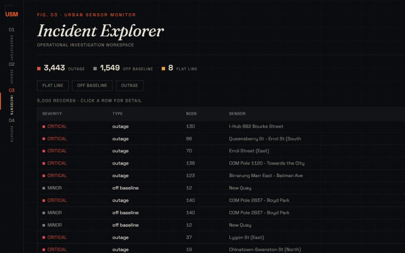

A spatial-intelligence platform that watches the health of a sensor fleet, flags the ones that have gone silent or started lying, and maps it in real time.
The live demo runs on a free tier that sleeps when idle, so the first load can take around 50 seconds to wake.
01 / Observatory - the whole fleet on one map, most critical sensors annotated
The problem
A fleet of sensors is only useful if you can trust it.
An organisation running hundreds of sensors (pedestrian counters, factory-floor IoT, environmental monitors) needs to know every day which ones are healthy and which are silent or wrong. A sensor that has died, frozen on one value, or is reporting impossible numbers quietly corrupts every dashboard and decision downstream. Checking hundreds by hand does not scale. Urban Sensor Monitor screens the whole fleet automatically, flags the unhealthy sensors with evidence, and summarises the week for the people who act on it.
An interactive map of the whole fleet, sensors coloured by health, with the most critical nodes pre-annotated and any node clickable for a contextual panel.
02
Sensor Intelligence
Single-sensor investigation: an interactive hourly time-series with outage and flat-line overlays, detection stats, a locator and linked incidents.
03
Incident Explorer
An operational workspace: filter and search, severity, expandable detail, CSV / XLSX export, and jump-to-sensor.
04
Intelligence Reports
A weekly health report written from the numbers by a local language model, with a template fallback and a rendered preview.
Results & proof
Real findings on live Melbourne data.
Run over six months of the City of Melbourne pedestrian network (around 433,000 readings across 100 reporting sensors):
4,092
Outages detected
167 h
Longest outage (Collins Place S)
10
Flat-lined sensors
134
Sensors monitored
The detectors are measured, not asserted.
Twelve known issues were injected into a clean synthetic dataset and scored by interval and timestamp match. Every injected issue was found, with zero false positives.
Rule
Precision
Recall
Outage
1.00
1.00
Flat-line
1.00
1.00
Impossible value
1.00
1.00
Duplicate
1.00
1.00
Off-baseline is a tunable "unusual reading" flag validated on real data, not scored here, since "unusual but real" has no crisp ground truth.
02 / Sensor Intelligence

03 / Incident Explorer
Architecture & tech
A decoupled frontend over a reused analytical core.
A FastAPI layer sits over the existing Python analysis, so no business logic is duplicated. The React frontend is fully decoupled and talks to it over HTTP; in production a single Docker image builds the frontend and runs the API that serves it, from one URL with no CORS.